Motivation
Welcome to our iterative design journey! Considering the importance of iterating through multiple rounds of design, critique and testing in product development, we formed a team to go through a typical design workflow of a startup's product--in this case, an online Manga subscription service called Azuki. We challenged ourselves to design a prototype for Azuki's site without looking at the startup's current product. Here we describe our process from sketching to user testing.
The Startup
We chose to design a desktop prototype for Azuki, a startup that provides digitally licensed manga online in a subscription-based model! Azuki received funding in Y Combinator's Winter 2022 round, and has been active since. For more info, see Azuki's YC page.
Sketches
We began by brainstorming multiple possible interface designs for our site. Below are our initial rough sketches. These represent a variety of layouts that we then workshopped and discussed to decide on a final design.
 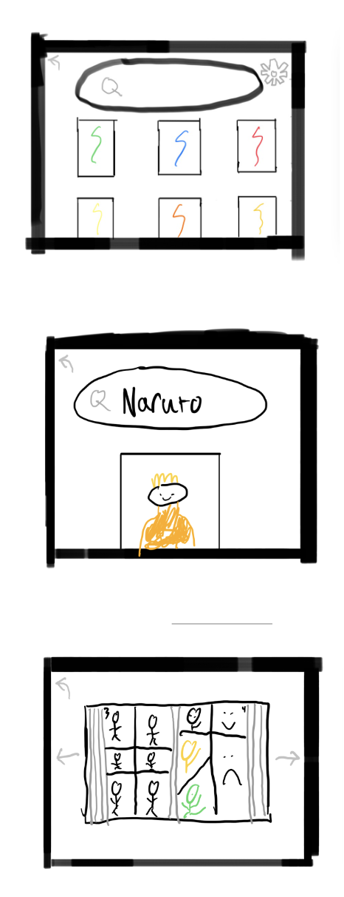
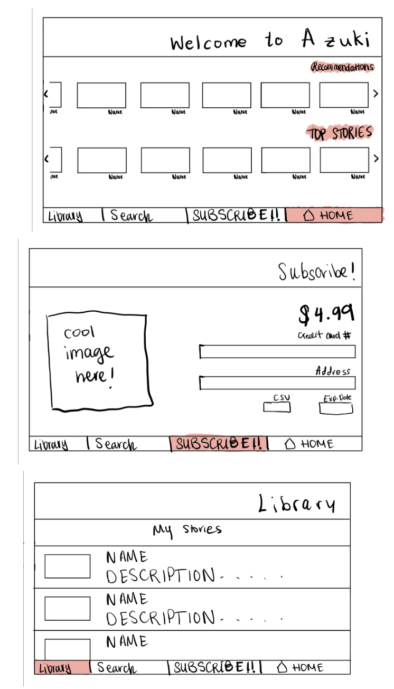
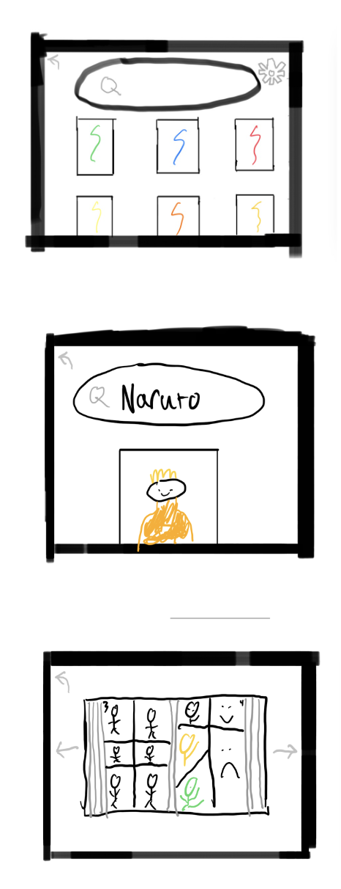
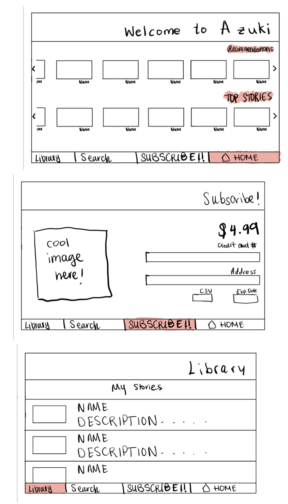
Wireframes
After deciding on a final design, we created wireframes to represent the layout of our site. We used Figma to create our wireframes to allow for real-time collaboration. Below are our wireframes.
Home Page
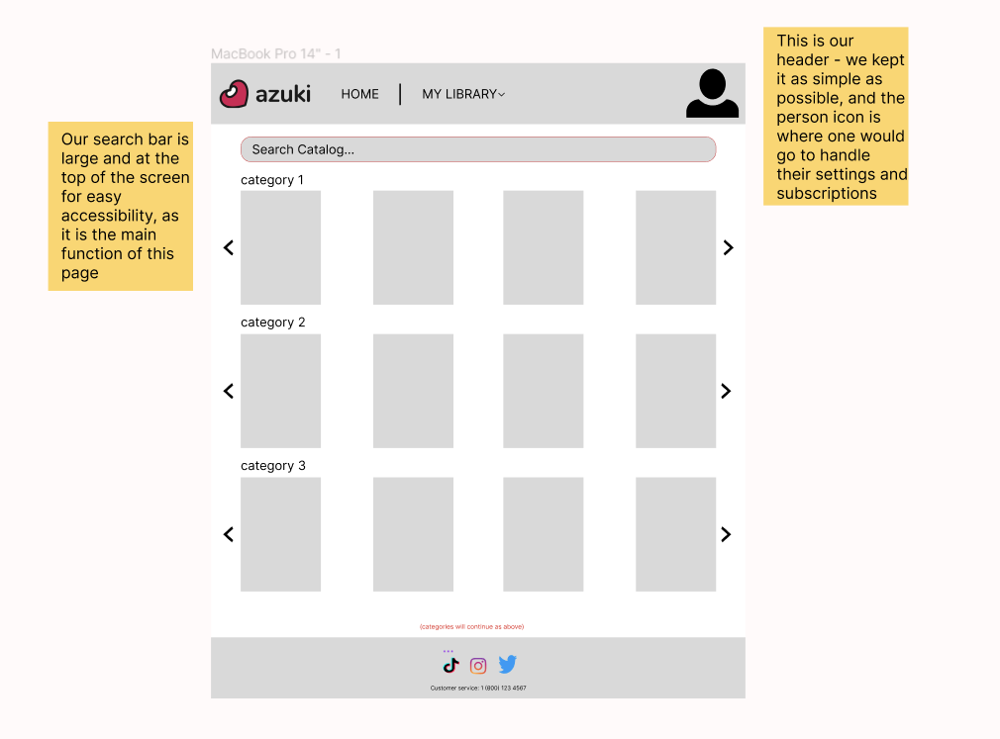Subscriptions Page
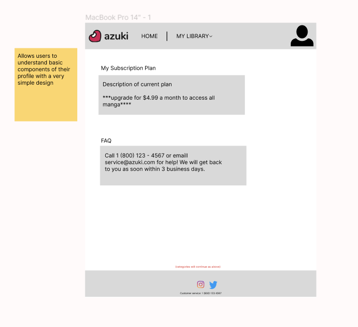"My Mangas" Page
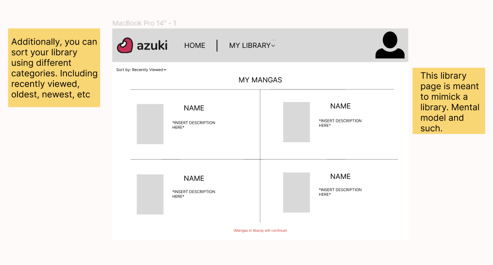E-Reader Page
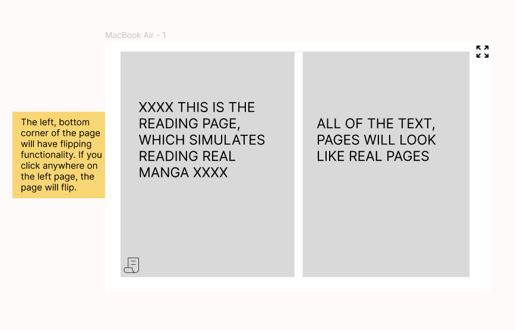Search Results Page
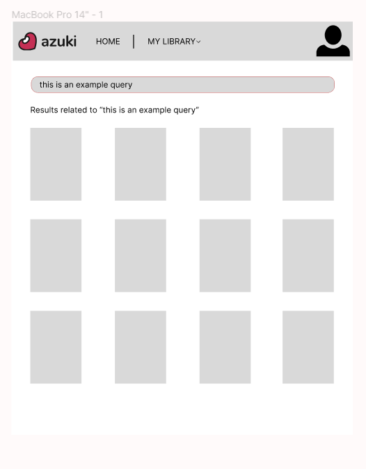Initial Mockup
Next, we proceeded to translate our wireframes into a HiFi, interactive mockup using Figma. Here, we made our major design choices for color, content, and hierarchy to build a usable mockup.
Initial Design Choices
- Combined best practices from our different designs (Netflix-like home page, top-of-screen navigation bar, etc.)
- Used a color scheme and font that is easy on the eyes and easy to read with high contrast
- Orange and blue for elements
- Black or off-white font depending on background
- Off-white background for high-contrast without straining eyes
- Made the site as simple as possible, with a minimalistic design
- Made the site as intuitive as possible, with clear and consistent labeling, and interactive elements with common affordances (e.g. downward arrow for navigation bar dropdown)
Critique & Final Mockup
Following the methodology of a traditional iterative design process, we participated in a critique session where we received feedback on our mockup. Listed below are the points of feedback we received and took into consideration when designing the second iteration of our mockup.
Feedback
- Change color of social media icons to blend in with the design of the rest of our site
- Make "My Library" dropdown open with click on every page that includes my library in the header.
- Make titles of categories on home page more noticeable (more spacing, different text styling for visual hierarchy)
- Include a way to return back to title page after opening a book page
- Provide an indication of how search results were sorted
- Have phone number and email links
- Make search results and home page less similar
- Include chapter guide in case a user does not want to start at the beginning
- Check for continuity of capitalization (lowercase aesthetic <3)
Final Mockup
After incorporating the feedback we received, we created a second iteration of our mockup. View the anonymized prototype here!
User Testing Setup & Initial Data
We used a remote usability test to collect feedback from three users on our mockup. To setup the user test, we provided task instructions and post-test questions so that the users could provide us with useful feedback. Tasks are numbered 1-10 with user responses / data!
- Log into the site 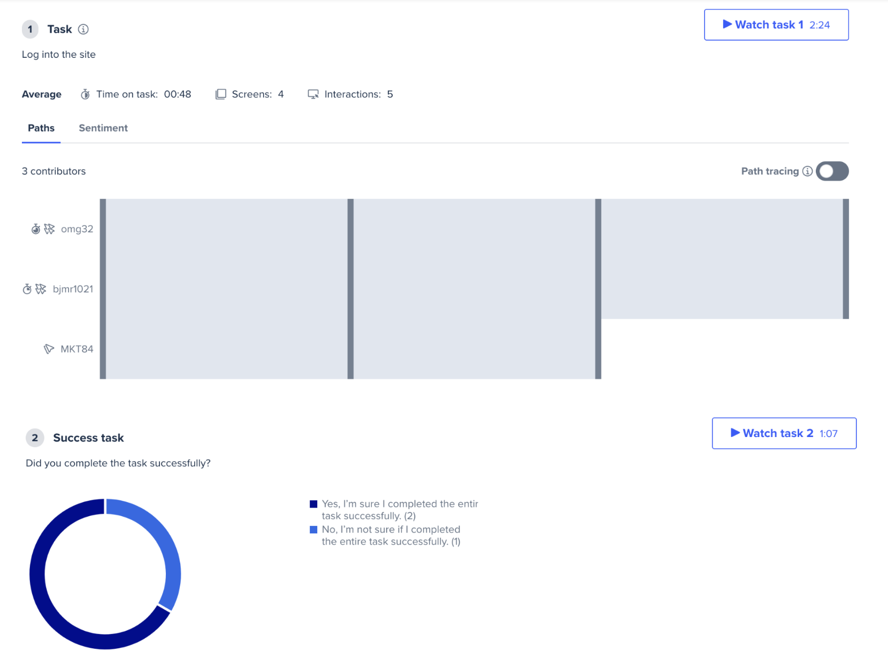
- Scroll through recommended 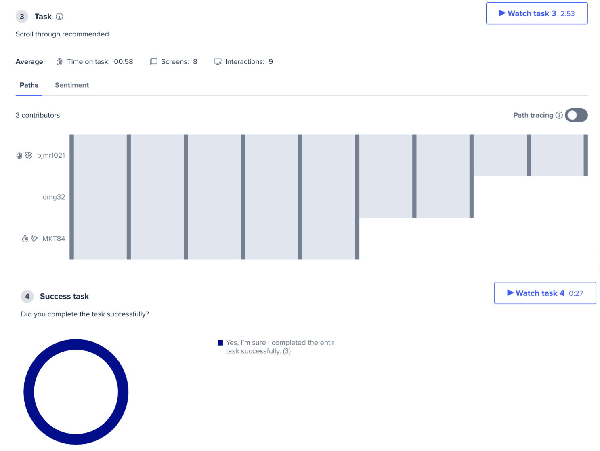
- Take as much time as you need to explore this website. Move on to the next task when you're ready.
- In your own words, what do you think you can do on this page? Be specific.
- User 1: "Scroll the home page and click to view book in more detail. See an overview of the book and add to library or click through to read."
- User 2: "in this page i can scroll through a lot of manga categories and easily find something interesting. I think mangas are categorized neatly ,which makes them easily accessible."
- User 3: "I think the home page can be used for quick access to favorites."
- Like a book 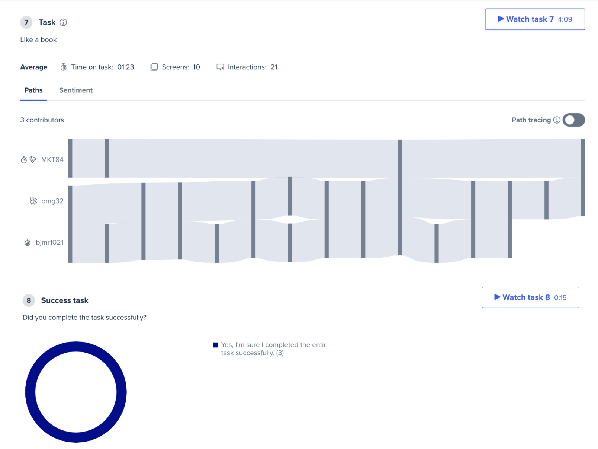
- Unlike a book 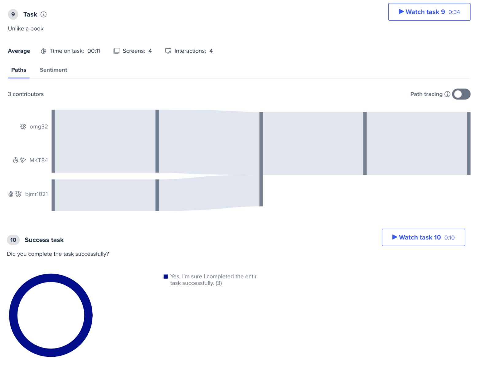
- Get to a library, any of ‘my favorites’ ‘my recents’ or ‘my lists’ 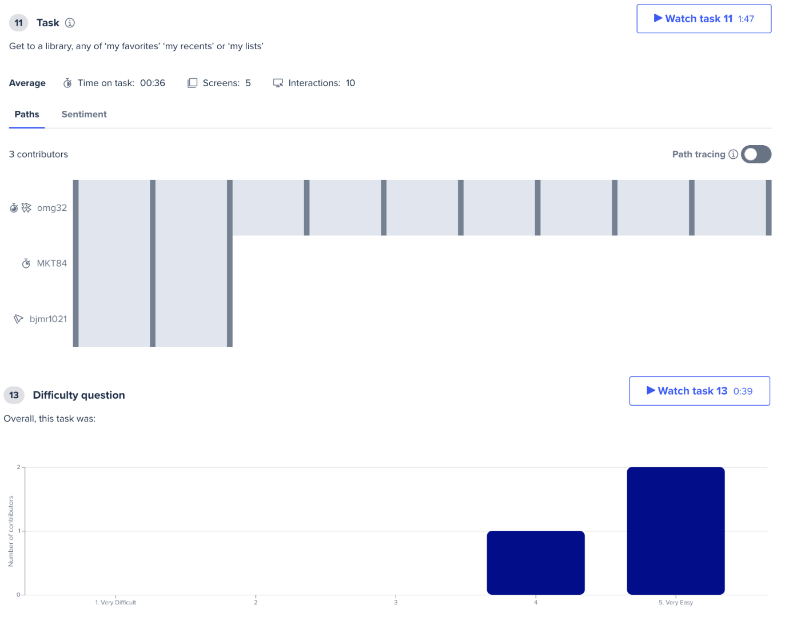
- Get to profile page and read the FAQ 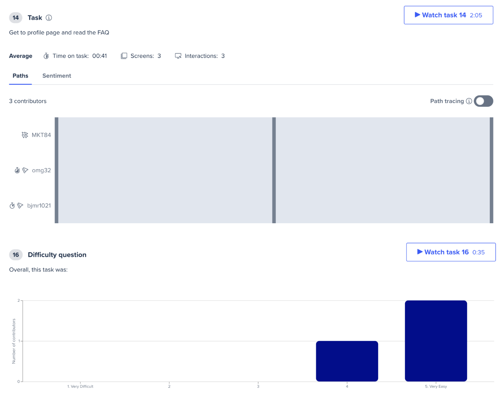
- In your own words, describe how you might benefit from using Azuki.
- User 1: "Digital subscriptions are my preference when I want to try something out but not have hardcopies cluttering my house."
- User 2: "Azuki seems helpful that i can get everything i need under one platform. i wouldnt need to use multiple platforms to read mangas. So i think Azuki will make my life easier , that i dont have to search in multiple platforms for a manga."
- User 3: "I would benefit from using Azuki because I love manga and anything anime related."
- How unlikely or likely are you to use Azuki in the future? Explain your answer.
- User 1: "Unlikely, as I don't have a need for it's service at the moment. The interface seems a little clunky and not very sleek."
- User 2: "i am very likely to use Azuki in the future for sure. and i think everyone who likes manga would definitely give Azuki a try."
- User 3: "I am very likely to use Azuki in the future. I would love an app or website that I can get manga."
Responses
Responses
Responses
More User Testing Results
Below is a deeper analysis of the results of our User Testing!
Test User 1 (video linked here)
- They tried to login and were not sure if they completed the entire task because they could not fill in email password (that part of our prototype is not responsive)
- They looked at the homepage and easily scrolled through the recommended, completing the task successfully
- They explored the site and tried to find a clickable manga which took a moment
- They found the overview of a manga and clicked start reading, but didnt find the page flipping functionality. They also noted that there is no back button from the book description page.
- They assume that adding a heart adds the book to the library and successfully hearts a manga.
- They go to a library successfully and thinks the task is very easy.
- They go to their profile page successfully (assumes that the profile page is the image on the top right)
- They share that they would’ve expected a FAQ instead of contact info in the FAQ section.
- They share that they would benefit from Azuki through not having to have their space cluttered with physical copies of manga, but critique the design of the interface, wishing for a more mature and sleek aesthetic.
Test User 2 (video linked here)
- They tried to login and were not sure if they completed the entire task because they could not fill in email password (that part of our prototype is not responsive)
- They successfully logged in to the page, it seemed very straightforward to them.
- They successfully scrolled through the recommended section. However they were unure what was clickable.
- They were impressed with how the mangas are arranged neatly on the home page and that they are easily accessible
- They are able to successfully describe the contents and purpose of the homepage.
- They struggle to like book and can’t find out how to open the description page of a story. Only some of the titles lead to a title page.
- They successfully clicked liked, and hopes that that will add it to his library but is unsure whether it will. They also successfully unlikes a book
- They struggle to go to their library from the book page and can only navigate to my list.
- They can successfully navigate to all library pages and glad there is a sorting option. He thought the task was very simple.
- They think the profile picture is very clear, which is helpful.
- Continually states that they think it's a great website to have, they are a big manga enthusiast.
- They think the FAQ is straightforward, it is good for a beginning stage and it is good to see a number and email.
- They successfully navigate to the profile page and read FAQs.They think the task is easy.
- They say that Azuki seems helpful in that you can get all your manga under one platform.
- They are very likely to use azuki in the future for sure.
Test User 3 (video linked here)
- They log in successfully
- They have trouble scrolling through and thinks there are not a lot of options of manga.
- They did not provide a clear description of the homepage
- They had a lot of trouble, as they seemed to be confused about the task and which manga they were supposed to like. But, they very easily like a manga, once they decide which they want to like, and also successfully unlike one.
- They successfully navigate to my library.
- They are confused about why FAQ has no questions.
- They love manga and are very likely to use Azuki.
Overall Analysis of User Testing
We expected that all of the tasks were going to be successfully completed, as the tasks we wrote represented the flow and functionality we attempted to build out in our prototype. Most of our tasks were successfully completed by all three testers and most of the difficulty and confusion came from the fact that our prototype is not 100% interactable and functional. All of these results matched our expectations and it was useful to see those expectations met by users who were outside of our team.
Changes we would make given this feedback:
Given this feedback, we would create much clearer navigation between pages (especially if we were to build out our HiFi into a real site), specifically with more clear “back” functionality and clearer methods for learnability. Maybe a pop-up to explain the page-flip functionality upon first use would be useful.
Conclusions
This iterative design experience was one of invaluable learning for our team. We gained further experience with prototyping, user testing, and aligning the mission of a product to our interface. We shared this prototype with Azuki and we hope that they will find value in our attempt at designing their product. Thank you so much for reading!